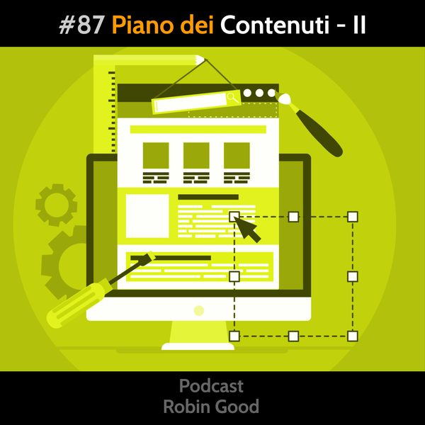

Piano dei Contenuti - II

Come passare dall'analisi delle frasi chiave e della concorrenza all'individuare i possibili titoli / argomenti per i contenuti da realizzare per il proprio sito web e per i propri social?
Facciamo degli esempi concreti, tratti da alcuni progetti che ho seguito.
1) Caso di studio - Pamela Mazzanti - Top Coach per titolari di centri estetici
Prima esigenza emersa all'analisi delle frasi chiave: Vendere di più nei centri estetici
Titolo/argomento possibile: Guida ai 10 modi per vendere di più nel tuo centro estetico
Seconda esigenza individuata:
aprire un centro benessere
come aprire un centro benessere
quanto costa aprire un centro benessere
aprire una spa
aprire un centro benessere
aprire un centro benessere in franchising
Titolo possibile: Tutti i Costi per Aprire e Gestire un Centro Estetico
Terza esigenza:
fidelity card
card prepagate estetica
fidelity card centro estetico
carte fedeltà centro estetico
fidelity card centro benessere
Titolo possibile: x Modi per Valorizzare le Fidelity Card in un Centro Estetico
2) Caso di studio - Michele Barzaghi - fuoco: Analisi di Mercato per le Farmacie
Gruppi di frasi chiave con maggior interesse:
arredamenti per Farmacie
arredi per farmacie
farmacie arredamento
arredare farmacia
arredamento farmacia
arredi farmacie
arredo farmacia
Titolo/argomento possibile: "Guida Completa delle Aziende di Arredamento per Farmacie”
“Come Arredare una Farmacia: Tutti i Passi”
“Checklist - tutto quello che serve per arredare una farmacia”
Seconda esigenza: Fidelity card
Frasi chiave con maggior interesse:
Fidelity card per farmacie
Titoli possibili:
"Fidelity Card per le Farmacie: Tutte i Tipi e le Differenze"
"Fidelity Card per le Farmacie: Tutte le Aziende e le Offerte in Italia"
"Fidelity Card per le Farmacie: Criteri di Analisi e di Scelta"
"Fidelity Card per le Farmacie: Pro e Contro e Come Valorizzarle"
3) Caso di studio - Farmacia Labrozzi - fuoco: Benessere Gastrointestinale.
Gruppi di frasi chiave con maggior interesse:
Prima esigenza: GONFIORE DI PANCIA
Pancia gonfia e dolorante
Pancia gonfia cause
Gonfiore di stomaco
Gonfiore addominale rimedi
Titolo possibile: "Guida alle Cause del Gonfiore di Pancia"
Seconda esigenza: MAL DI STOMACO
Mal di stomaco
Mal di stomaco cosa mangiare
Rimedi mal di stomaco
Titolo: Guida a Tutti i Rimedi per il Mal di Stomaco
Terza esigenza: BRUCIORE GASTRICO
Bruciore di stomaco
Bruciore di stomaco rimedi naturali
Titolo: Come Evitare il Bruciore Gastrico
In sintesi: Per individuare con precisione i titoli e gli argomenti dei contenuti principali da realizzare inizialmente per il proprio sito web, è indispensabile partire dall'analisi delle frasi chiave e della concorrenza.
Una volta che si sono raccolte in un foglio elettronico tutte le frasi rilevanti individuate attraverso strumenti come Answerthepublic.com e SEOZoom.it, e che rappresentano le domande che scriverebbero su Google i potenziali clienti che ancora non conoscono il tuo sito/servizio, è necessario radunare queste frasi in gruppi logici che rappresentano specifiche esigenze.
Una volta raggruppate per temi / esigenze, alle frasi chiave individuate vanno associati i dati di domanda (volume medio di ricerche mensili) e del livello di concorrenza (keyword difficulty) per poter capire, fra i vari gruppi / temi quali ci offrono le migliori opportunità di visibilità (in quanto hanno un discreto livello di domanda e bassa concorrenza).
Individuati i temi su cui c'è più possibilità si procede come negli esempi qui sopra, cercando di trovare dei titoli che soddisfino appieno le domande e le aspettative di chi le ha espresse.
-------------
Info Utili
• Ascolta e condividi questo podcast:
https://gopod.me/RobinGood
• Dammi feedback:
critiche, commenti, suggerimenti, idee e domande unendoti al gruppo Telegram @RobinGoodPodcastFeedback.
• Diventa sostenitore:
esprimi la tua soddisfazione e incoraggiamento diventando anche tu un sostenitore attivo di questo podcast qui: www.patreon.com/Robin_Good
• Rimani aggiornato:
https://facebook.com/RobinGoodItalia/
• Segui le mie scoperte e dove sarò:
http://robingood.it/toptools-newsletter
Per qualsiasi richiesta scrivi a:
Ludovica.Scarfiotti@robingood.it
Musica: "All Your Love" by Moose CYGN - disponibile su Bandcamp: https://chillhop.bandcamp.com/track/all-your-love